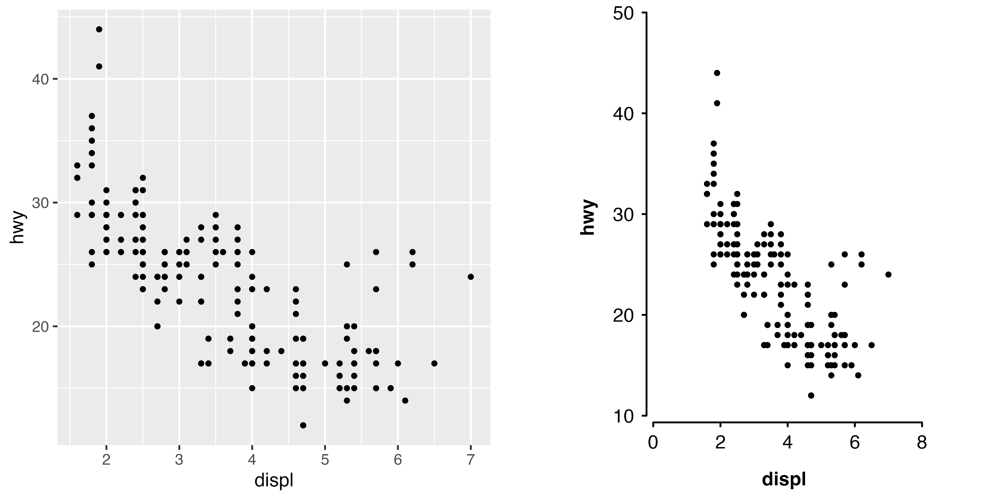

Shape plots
shape_plot() creates a plot of estimates and CIs against
risk factor levels using the ggplot2 package. The function
returns both a plot and the ggplot2 code used to create the plot. In
RStudio the ggplot2 code used to create the plot will be shown in the
Viewer pane.
The function uses ckb_style() to modify the theme and
control the look of the plot.
Example data
ckbplotr_shape_data
#> est se rf n is_female
#> 1 1.00 0.08 20.0 109 0
#> 2 1.25 0.03 28.0 103 0
#> 3 1.50 0.07 38.0 143 0
#> 4 1.75 0.15 50.0 104 0
#> 5 1.70 0.08 18.5 140 1
#> 6 1.85 0.08 25.0 134 1
#> 7 2.25 0.07 37.0 127 1
#> 8 2.60 0.10 47.0 99 1Simple example
Given a data frame of estimates and standard errors (to be plotted on the y axis), and risk factor levels (to be plotted on the x axis), a plot can be created.
shape_plot(ckbplotr_shape_data[ckbplotr_shape_data$is_female == 0,],
col.x = "rf",
col.estimate = "est",
col.stderr = "se",
col.n = "n",
xlims = c(15, 50),
ylims = c(0.5, 3),
scalepoints = TRUE)
#> ℹ Narrow confidence interval lines may become hidden in the shape plot.
#> ℹ Please check your final output carefully and see
#> vignette("shape_confidence_intervals") for more details.
#> This message is displayed once per session.For more details on customising these plots, see “More with shape plots”.
Narrow confidence interval lines may become hidden in plots. Please check your final output carefully and see “Confidence interval lines in shape plots” for methods for handle this.
Forest plots
forest_plot() creates a forest plot using the ggplot2 graphics package. The
function returns both a plot and the ggplot2 code used to create the
plot. In RStudio the code used to create the plot will be shown in the
Viewer pane.
Narrow confidence interval lines may become hidden in forest plots. Please check your final output carefully and see “Confidence interval lines in forest plots” for methods for handle this.
Prepare data
First of all, do your analyses and put the results into data frames (one data frame for each forest plot panel). Here we take subsets of the example data provided in the package.
resultsA <- dplyr::filter(ckbplotr_forest_data, name == "A")
resultsB <- dplyr::filter(ckbplotr_forest_data, name == "B")
head(resultsA[,c("variable", "estimate", "stderr", "n")])
#> variable estimate stderr n
#> 1 nmr_l_vldl_p 0.007652073 0.03020935 407
#> 2 nmr_m_vldl_p 0.006110668 0.02475996 1816
#> 3 nmr_s_vldl_p -0.028511316 0.04000646 812
#> 4 nmr_idl_p 0.004209247 0.01336079 938
#> 5 nmr_l_ldl_p 0.001505025 0.01589807 800
#> 6 nmr_m_ldl_p 0.011208151 0.02168255 423Simple forest plot
The panels argument is a list of data frames with
results to be plotted, the col.key argument is the name of
the column that defines which results should be plotted on the same row,
and the exponentiate argument is a logical value telling
the function we are providing estimates on the log scale.
By default, the function assumes that estimates and standard errors
are in columns named “estimate” and “stderr”, but this can also be set
by the col.estimate and col.stderr
arguments.
forest_plot(panels = list(resultsA, resultsB),
col.key = "variable",
exponentiate = TRUE)
#> ℹ Narrow confidence interval lines may become hidden in the forest plot.
#> ℹ Please check your final output carefully and see
#> vignette("forest_confidence_intervals") for more details.
#> This message is displayed once per session.Using row labels
To use row labels, first create a data frame of labels. The data set must contain:
- a column used to match labels to the correct results, specified in
the argument
col.key. - up to three columns with headings/subheadings/labels for rows.
If a particular level of label is not required it can be set to missing.
head(ckbplotr_row_labels)
#> heading subheading label variable
#> 1 Lipoprotein particle concentration VLDL Large nmr_l_vldl_p
#> 2 Lipoprotein particle concentration VLDL Medium nmr_m_vldl_p
#> 3 Lipoprotein particle concentration VLDL Small nmr_s_vldl_p
#> 4 Lipoprotein particle concentration IDL <NA> nmr_idl_p
#> 5 Lipoprotein particle concentration LDL Large nmr_l_ldl_p
#> 6 Lipoprotein particle concentration LDL Medium nmr_m_ldl_pIn forest_plot() specify the row.labels
argument as the data frame of labels you’ve created. Use the
row.labels.levels argument to choose which columns are used
as headings/subheadings/labels.
Use the rows argument to choose the results to be
plotted. The first level (heading) labels will be included in the plot
from top to bottom. Other labels will be in the order that they are in
the row.labels data frame.
forest_plot(panels = list("Analysis A" = resultsA,
"Analysis B" = resultsB),
col.key = "variable",
row.labels = ckbplotr_row_labels,
row.labels.levels = c("heading", "subheading", "label"),
rows = c("Triglycerides concentration",
"Lipoprotein particle concentration"),
exponentiate = TRUE,
xlim = c(0.9, 1.1),
xticks = c(0.9, 1, 1.1),
scalepoints = TRUE,
pointsize = 3)In this plot we’ve also used a named list for panels and
the xlim, xticks, scalepoints,
and pointsize arguments to customise the plot.
For more details on customising forest plots, see “More with forest plots”.
Other plots
Use + ckb_style() to covert an existing ggplot2 plot.
plot <- ggplot(data = mpg,
aes(x = displ, y = hwy)) +
geom_point(size = 1)
ckbplot <- plot +
ckb_style(xlims = c(0, 8),
ylims = c(10, 50))
gridExtra::grid.arrange(plot, ckbplot, ncol = 2)
See “Make any ggplot like a CKB plot” for more details.
Confidence intervals
When standard errors are supplied to the shape_plot()
and forest_plot() functions, confidence intervals are
calculated as 95% confidence intervals using the Normal approximation
method (with critical value 1.96).